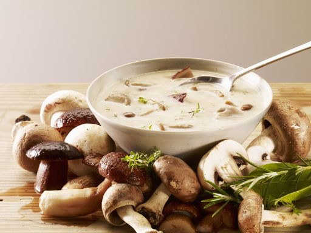
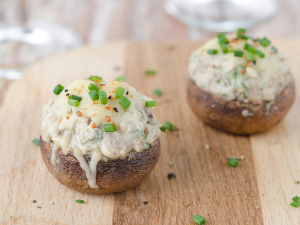
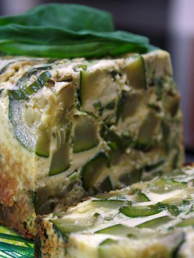

| Image | Titre | Nb de personnes | Temps de préparation | Note |
|---|---|---|---|---|
| Aumonières surprise au camembert | 4 | 14 minutes | 4/5 | |
|  | Cappuccino de champignons | 4 | 1 heure 40 minutes | 5/5 |
|  | Champignons farcis végétariens | 4 | 25 minutes | 5/5 |
 |
Fenouil mariné au citron | 4 | 15 minutes | 2.5/5 |
 |
Gnocchis à la courge | 4 | 25 minutes | 3/5 |
 |
Poivrons frits farcis à la féta | 2 | 30 minutes | 4/5 |
 |
Tagliatelles de courgettes | 8 | 18 minutes | 4/5 |
 |
Tarte fine tapenade, poireaux et chèvre | 4 | 50 minutes | 4/5 |
|  | Terrine aux courgettes et au basilic | 8 | 1 heure | 3/5 |
 |
Salade de radis aux pommes | 4 | 15 minutes | 4/5 |